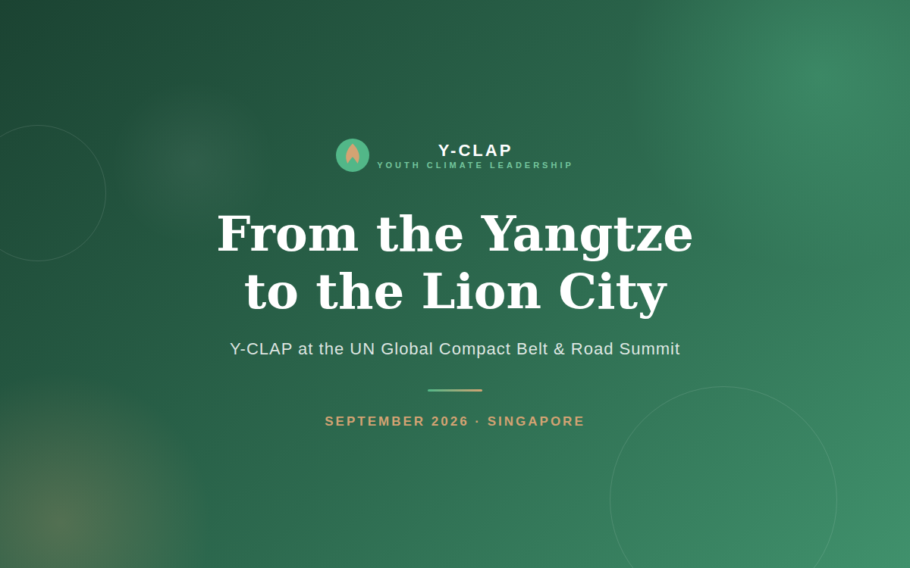

Updates
Program milestones, field updates, and impact stories from Y-CLAP.

On September 2–3, the Youth Climate Leadership Action Program (Y-CLAP) team was invited to Singapore for the second Global Enterprises High-Quality Co-building Belt & Road Summit, hosted by the United Nations Global Compact (UNGC). Founder Lucia Liu, founding executive board member Mark Ma, program officer Yaya Lin, and first-cohort youth member Xiangji Zhou took part in the summit, themed “Connectivity, Co-building a Better World,” which brought together enterprises, academic institutions, and international organizations to explore sustainable development, the green transition, and global cooperation.
Recap videos from Y-CLAP's recent milestones — the Singapore Belt & Road Summit and the Chongqing module.
September 2026
July 2026
July 2026 · Chongqing
From July 9 to 12, Y-CLAP participants and funder representatives gathered in Chongqing for a four-day, three-night immersion — moving from theory to action through cross-sector learning, field visits, project design practice, and closing pitches.
Open Original ArticleMarch 2025
The first Y-CLAP cohort set out to learn, connect, and develop practical climate solutions with expert support.
March 2025
Y-CLAP formalizes partnerships to support youth-led environmental projects and broader public engagement.